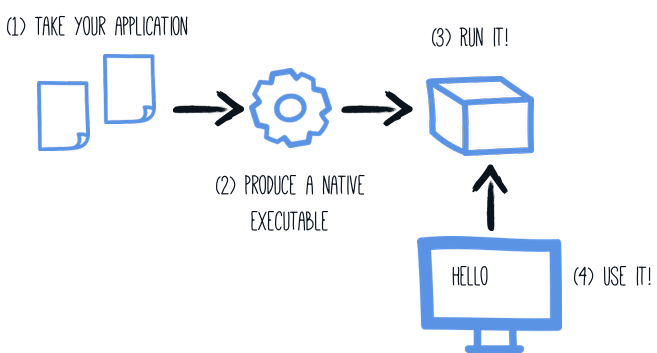

Building a Native Executable
Quarkus applications can be compiled to native executables, producing a standalone binary that starts in milliseconds and uses a fraction of the memory of a JVM process.
In this guide, you will compile the application from the Getting Started Guide to a native executable, test it, and package it in a container.
Do you need a native executable?
Quarkus on the JVM is already fast, sub-second startup, low memory footprint, and optimized throughput. For many applications, JVM mode is the right choice.
Native executables shine when:
-
Startup time is critical: serverless/FaaS, CLI tools, or scale-to-zero environments where cold starts matter.
-
Memory is constrained: dense container deployments or edge devices with tight RAM budgets.
-
You want the smallest possible container image: native binaries produce images under 50MB.
JVM mode is typically better when:
-
Peak throughput matters most: the JVM’s JIT compiler optimizes hot paths at runtime, which can outperform native on long-running workloads.
-
Build time is a constraint: native compilation takes minutes, JVM builds take seconds.
-
You rely heavily on reflection or dynamic class loading: these require explicit configuration for native images.
| Start with JVM mode. Move to native when you have a concrete need. Both modes use the same code and the same Quarkus optimizations: native just changes how the binary is produced. |
Comparing JVM, Leyden AOT, and native modes
Native is one of three runtime options Quarkus supports. JVM fast-jar, JVM with Project Leyden AOT caching (JDK 24+), and native (Mandrel) each trade cold-start speed, peak throughput, memory footprint, and build cost differently. The table below compares them. Pick the mode that matches your workload’s most important constraint.
| Mode | Cold start | Time to first request | Peak throughput | Memory (RSS) | Container image size | Build cost | When to choose |
|---|---|---|---|---|---|---|---|
JVM fast-jar |
~0.4 s (small REST) to ~3 s (large CRUD) |
4,417 ms |
13,265 tps (baseline) |
304 MiB |
517 MB |
~30 s build; no special workflow |
Long-running services, throughput-critical workloads; teams on pre-JDK-24 runtimes |
~80 ms (small) to ~900 ms (large) |
1,859 ms |
12,389 tps (~7% below JVM) |
240 MiB |
715 MB (AOT cache adds ~198 MB) |
Standard build plus a training run on a representative workload |
Cold-start-sensitive but not millisecond-critical; requires JDK 24+; keeps full JVM tooling (debuggers, profilers, JFR) |
|
Native (Mandrel) |
~17 ms (small) to ~240 ms (large) |
581 ms |
5,411 tps (~59% below JVM) |
95 MiB |
244 MB |
3-10 min build; 4-8 GB build-host RAM |
Extreme cold start (serverless, scale-to-zero); edge deployments; high-density container hosts where memory is the binding constraint |
Time to first request, peak throughput, and memory (RSS) come from the 2026-04-21 perf-lab tuned benchmark (Quarkus 3.34.3, JDK 25.0.2, GraalVM 25.0.2-graalce, 4 CPUs, -Xmx512m).
Cold-start ranges and container image sizes come from the Leyden integration benchmarks and the Mar 2026 performance post.
For the latest numbers, see the Quarkus benchmarks chart reference.
{kind=link}
For the Leyden AOT cache path, see the AOT caching guide. If native is the right fit for your workload, read on. The next sections walk you through prerequisites, compilation, testing, and container packaging.
Prerequisites
To complete this guide, you need:
-
Roughly 15 minutes
-
An IDE
-
JDK 17+ installed with
JAVA_HOMEconfigured appropriately -
Apache Maven 3.9.16
-
A working container runtime (Docker or Podman)
-
Optionally the Quarkus CLI if you want to use it
-
Mandrel or GraalVM installed and configured appropriately
-
The code of the application developed in the Getting Started Guide.
|
Supporting native compilation in C
What does having a working C developer environment mean?
|
Choosing a GraalVM distribution
Building a native executable requires a GraalVM distribution. There are two main options:
-
Oracle GraalVM — the standard distribution from Oracle. Supports Linux, macOS (both Intel and Apple Silicon), and Windows.
-
Mandrel — a downstream distribution tailored for Quarkus. It excludes components not needed by Quarkus (such as polyglot support) to provide a smaller distribution.
GraalVM for JDK 21 is required.
Configuring GraalVM
|
This step is only required for generating native executables targeting non-Linux operating systems. For generating native executables targeting Linux, you can optionally skip this section and use a builder image instead. |
|
If you cannot install GraalVM, you can use a multi-stage Docker build to run Maven inside a Docker container that embeds GraalVM. There is an explanation of how to do this in the Native Reference Guide. |
-
Install GraalVM if you haven’t already. You have a few options for this:
-
Download the appropriate archive from https://github.com/graalvm/mandrel/releases or https://www.graalvm.org/downloads/, and unpack it like you would any other JDK.
-
Use platform-specific installer tools like sdkman, homebrew, or scoop. For example, install it with
sdk install java jdk-21.
-
-
Configure the runtime environment. Set
GRAALVM_HOMEenvironment variable to the GraalVM installation directory, for example:export GRAALVM_HOME=$HOME/Development/mandrel/On macOS, point the variable to the
Homesub-directory:export GRAALVM_HOME=$HOME/Development/graalvm/Contents/Home/On Windows, you will have to go through the Control Panel to set your environment variables.
Installing via scoop will do this for you.
-
(Optional) Set the
JAVA_HOMEenvironment variable to the GraalVM installation directory.export JAVA_HOME=${GRAALVM_HOME} -
(Optional) Add the GraalVM
bindirectory to the pathexport PATH=${GRAALVM_HOME}/bin:$PATH
|
Issues using GraalVM with macOS
GraalVM binaries are not (yet) notarized for macOS as reported in this GraalVM issue.
This means that you may see the following error when using Use the following command to recursively delete the |
Producing a native executable
The native executable for your application will contain the application code, required libraries, Java APIs, and a reduced version of a VM. The smaller VM base improves the startup time of the application and produces a minimal disk footprint.

|
You can provide custom options for the You can find more information about how to configure the native image building process in the Configuring the Native Executable section below. |
Native compilation takes significantly longer than a regular JVM build. Create a native executable using:
quarkus build --native./mvnw install -Dnative./gradlew build -Dquarkus.native.enabled=true|
Issues with packaging on Windows
The Microsoft Native Tools for Visual Studio must first be initialized before packaging.
You can do this by starting the |
The build produces target/getting-started-1.0.0-SNAPSHOT-runner.
You can run it directly:
./target/getting-started-1.0.0-SNAPSHOT-runner__ ____ __ _____ ___ __ ____ ______
--/ __ \/ / / / _ | / _ \/ //_/ / / / __/
-/ /_/ / /_/ / __ |/ , _/ ,< / /_/ /\ \
--\___\_\____/_/ |_/_/|_/_/|_|\____/___/
INFO [io.quarkus] (main) getting-started 1.0.0-SNAPSHOT native (powered by Quarkus {quarkus-version}) started in 0.012s. Listening on: http://0.0.0.0:8080
INFO [io.quarkus] (main) Profile prod activated.
INFO [io.quarkus] (main) Installed features: [cdi, rest, smallrye-context-propagation, vertx]Testing the native executable
Producing a native executable can lead to a few issues, and so it’s also a good idea to run some tests against the application running in the native file. The reasoning is explained in the Testing Guide.
To see the GreetingResourceIT run against the native executable, use ./mvnw verify -Dnative:
$ ./mvnw verify -Dnative
...
[INFO] -------------------------------------------------------
[INFO] T E S T S
[INFO] -------------------------------------------------------
[INFO] Running org.acme.getting.started.GreetingResourceIT
...
INFO [io.quarkus] (main) getting-started 1.0.0-SNAPSHOT native (powered by Quarkus 999-SNAPSHOT) started in 0.012s. Listening on: http://0.0.0.0:8081
INFO [io.quarkus] (main) Profile prod activated.
INFO [io.quarkus] (main) Installed features: [cdi, rest, smallrye-context-propagation, vertx]
[INFO] Tests run: 2, Failures: 0, Errors: 0, Skipped: 0
...|
By default, Quarkus waits for 60 seconds for the native image to start before automatically failing the native tests. This
duration can be changed using the |
For advanced testing scenarios, test profiles, excluding tests from native runs, or testing an existing binary, see the Native Reference Guide.
Creating a Linux executable without GraalVM installed
| Before going further, be sure to have a working container runtime (Docker, podman) environment. If you use Docker on Windows you should share your project’s drive at Docker Desktop file share settings and restart Docker Desktop. |
Quite often one only needs to create a native Linux executable for their Quarkus application (for example in order to run in a containerized environment) and would like to avoid the trouble of installing the proper GraalVM version in order to accomplish this task (for example, in CI environments it’s common practice to install as little software as possible).
To this end, Quarkus provides a very convenient way of creating a native Linux executable by leveraging a container runtime such as Docker or podman. The easiest way of accomplishing this task is to execute:
quarkus build --native --no-tests -Dquarkus.native.container-build=true
# The --no-tests flag is required only on Windows and macOS../mvnw install -Dnative -DskipTests -Dquarkus.native.container-build=true./gradlew build -Dquarkus.native.enabled=true -Dquarkus.native.container-build=true|
What to expect
Your first container-based native build typically takes 3-10 minutes and uses 4-8 GB of RAM on the build host. Fan spin-up is normal; the build is still running, just working hard. A build that runs past 15 minutes without output usually means the container runtime is short on memory; raise its CPU and memory allocation and retry. The output is a Linux binary produced inside the builder image.
Its architecture matches the builder image you pulled: typically |
|
By default, Quarkus automatically detects the container runtime. If you want to explicitly select the container runtime, you can do it with: For Docker: CLI
Maven
Gradle
For podman: CLI
Maven
Gradle
These are regular Quarkus config properties, so if you always want to build in a container
it is recommended you add these to your |
Executable built that way with the container runtime will be a 64-bit Linux executable, so depending on your operating system, it may no longer be runnable.
|
The builder image used to build the native executable is based on UBI 10.
It means that the native executable produced by the container build will be based on UBI 10 as well.
So, if you plan to build a container, make sure that the base image in your You can configure the builder image used for the container build by setting the
You can see the available tags for UBI 8 here (UBI 8), for UBI 9 here (UBI 9), and for UBI 10 here (UBI 10)) |
|
If you see the following invalid path error for your application JAR when trying to create a native executable using a container build, even though your JAR was built successfully, you’re most likely using a remote daemon for your container runtime. Error: Invalid Path entry getting-started-1.0.0-SNAPSHOT-runner.jar Caused by: java.nio.file.NoSuchFileException: /project/getting-started-1.0.0-SNAPSHOT-runner.jar In this case, use the parameter The reason for this is that the local build driver invoked through |
|
Building with GraalVM instead of Mandrel requires a custom builder image parameter to be passed additionally: CLI
Maven
Gradle
Please note that the above command points to a floating tag. It is highly recommended to use the floating tag, so that your builder image remains up-to-date and secure. If you absolutely must, you may hard-code to a specific tag (see here (UBI 8), here (UBI 9), and here (UBI 10) for available tags), but be aware that you won’t get security updates that way and it’s unsupported. |
Creating a container
Using the container-image extensions
By far the easiest way to create a container-image from your Quarkus application is to leverage one of the container-image extensions.
If one of those extensions is present, then creating a container image for the native executable is essentially a matter of executing a single command:
./mvnw package -Dnative -Dquarkus.native.container-build=true -Dquarkus.container-image.build=true-
quarkus.native.container-build=trueallows for creating a Linux executable without GraalVM being installed (and is only necessary if you don’t have GraalVM installed locally or your local operating system is not Linux)
|
If you’re running a remote Docker daemon, you need to replace See Creating a Linux executable without GraalVM installed for more details. |
-
quarkus.container-image.build=trueinstructs Quarkus to create a container-image using the final application artifact (which is the native executable in this case)
See the Container Image guide for more details.
Using the micro base image
You can also build a container manually using the generated Dockerfile.
The project generation provides a Dockerfile.native-micro in the src/main/docker directory with the following content:
FROM quay.io/quarkus/ubi10-quarkus-micro-image:2.0
WORKDIR /work/
RUN chown 1001 /work \
&& chmod "g+rwX" /work \
&& chown 1001:root /work
COPY --chown=1001:root --chmod=755 target/*-runner /work/application
EXPOSE 8080
USER 1001
ENTRYPOINT ["./application", "-Dquarkus.http.host=0.0.0.0"]|
Quarkus Micro Image?
The Quarkus Micro Image is a small container image providing the right set of dependencies to run your native application. It is based on UBI Micro. This page explains how to extend the |
Build and run the container:
docker build -f src/main/docker/Dockerfile.native-micro -t quarkus-quickstart/getting-started .
docker run -i --rm -p 8080:8080 quarkus-quickstart/getting-startedFor advanced container options — multi-stage builds, distroless images, scratch images, or UPX compression — see the Native Reference Guide.
Configuring the Native Executable
There are a lot of different configuration options that can affect how the native executable is generated.
These are provided in application.properties the same as any other config property.
The properties are shown below:
Configuration property fixed at build time - All other configuration properties are overridable at runtime
Configuration property |
Type |
Default |
||||||||||||||||||||
|---|---|---|---|---|---|---|---|---|---|---|---|---|---|---|---|---|---|---|---|---|---|---|
Set to enable native-image building using GraalVM. Environment variable: Show more |
boolean |
|
||||||||||||||||||||
Set to enable native-image bundle generation. Environment variable: Show more |
boolean |
|||||||||||||||||||||
Generates the native-image bundle through a dry-run build, skipping the actual native-image build. Environment variable: Show more |
boolean |
|
||||||||||||||||||||
Set to define the native-image bundle name. If not set the default name will match the native-executable’s name suffixed by Environment variable: Show more |
string |
|||||||||||||||||||||
Set to prevent the native-image process from actually building the native image. Environment variable: Show more |
boolean |
|
||||||||||||||||||||
Comma-separated, additional arguments to pass to the build process. If an argument includes the Environment variable: Show more |
list of string |
|||||||||||||||||||||
Comma-separated, additional arguments to pass to the build process. The arguments are appended to those provided through Environment variable: Show more |
list of string |
|||||||||||||||||||||
If the HTTP url handler should be enabled, allowing you to do URL.openConnection() for HTTP URLs Environment variable: Show more |
boolean |
|
||||||||||||||||||||
If the HTTPS url handler should be enabled, allowing you to do URL.openConnection() for HTTPS URLs Environment variable: Show more |
boolean |
|
||||||||||||||||||||
The default value for java.awt.headless JVM option. Switching this option affects linking of awt libraries. Environment variable: Show more |
boolean |
|
||||||||||||||||||||
Defines the file encoding as in Native image runtime uses the host’s (i.e. build time) value of Environment variable: Show more |
string |
|
||||||||||||||||||||
If all character sets should be added to the native executable. Note that some extensions (e.g. the Oracle JDBC driver) also take this setting into account to enable support for all charsets at the extension level. This increases image size. Environment variable: Show more |
boolean |
|
||||||||||||||||||||
The location of the Graal distribution Environment variable: Show more |
string |
|
||||||||||||||||||||
The location of the JDK Environment variable: Show more |
|
|||||||||||||||||||||
The maximum Java heap to be used during the native image generation Environment variable: Show more |
string |
|||||||||||||||||||||
If the native image build should wait for a debugger to be attached before running. This is an advanced option and is generally only intended for those familiar with GraalVM internals Environment variable: Show more |
boolean |
|
||||||||||||||||||||
If the debug port should be published when building with docker and debug-build-process is true Environment variable: Show more |
boolean |
|
||||||||||||||||||||
If isolates should be enabled Environment variable: Show more |
boolean |
|
||||||||||||||||||||
If a JVM based 'fallback image' should be created if native image fails. This is not recommended, as this is functionally the same as just running the application in a JVM Environment variable: Show more |
boolean |
|
||||||||||||||||||||
If all META-INF/services entries should be automatically registered Environment variable: Show more |
boolean |
|
||||||||||||||||||||
If the bytecode of all proxies should be dumped for inspection Environment variable: Show more |
boolean |
|
||||||||||||||||||||
If this build should be done using a container runtime. Unless container-runtime is also set, docker will be used by default. If docker is not available or is an alias to podman, podman will be used instead as the default. Environment variable: Show more |
boolean |
|||||||||||||||||||||
Explicit configuration option to generate a native Position Independent Executable (PIE) for Linux. If the system supports PIE generation, the default behaviour is to disable it for performance reasons. However, some systems can only run position-independent executables, so this option enables the generation of such native executables. Environment variable: Show more |
boolean |
|||||||||||||||||||||
Generate instructions for a specific machine type. Defaults to Environment variable: Show more |
string |
|||||||||||||||||||||
If this build is done using a remote docker daemon. Environment variable: Show more |
boolean |
|
||||||||||||||||||||
The docker image to use to do the image build. It can be one of Note: Builder images are available using UBI 8, UBI 9, and UBI 10 base images, for example:
You need to be aware that if you use a builder image using UBI 10 and you plan to build a container, you must ensure that the base image used in the container is also UBI 10. Environment variable: Show more |
string |
|
||||||||||||||||||||
The strategy for pulling the builder image during the build. Defaults to 'always', which will always pull the most up-to-date image; useful to keep up with fixes when a (floating) tag is updated. Use 'missing' to only pull if there is no image locally; useful on development environments where building with out-of-date images is acceptable and bandwidth may be limited. Use 'never' to fail the build if there is no image locally. Environment variable: Show more |
|
|
||||||||||||||||||||
The container runtime (e.g. docker) that is used to do an image based build. If this is set then a container build is always done. Environment variable: Show more |
|
|||||||||||||||||||||
Options to pass to the container runtime Environment variable: Show more |
list of string |
|||||||||||||||||||||
This property is deprecated: Use If the resulting image should allow VM introspection. Environment variable: Show more |
boolean |
|
||||||||||||||||||||
Enable monitoring various monitoring options. The value should be comma separated.
Environment variable: Show more |
list of |
|||||||||||||||||||||
If the reports on call paths and included packages/classes/methods should be generated Environment variable: Show more |
boolean |
|
||||||||||||||||||||
If exceptions should be reported with a full stack trace Environment variable: Show more |
boolean |
|
||||||||||||||||||||
If errors should be reported at runtime. This is a more relaxed setting, however it is not recommended as it means your application may fail at runtime if an unsupported feature is used by accident. Note that the use of this flag may result in build time failures due to `ClassNotFoundException`s. Reason most likely being that the Quarkus extension already optimized it away or do not actually need it. In such cases you should explicitly add the corresponding dependency providing the missing classes as a dependency to your project. Environment variable: Show more |
boolean |
|
||||||||||||||||||||
Don’t build a native image if it already exists. This is useful if you have already built an image and you want to use Quarkus to deploy it somewhere. Note that this is not able to detect if the existing image is outdated, if you have modified source or config and want a new image you must not use this flag. Environment variable: Show more |
boolean |
|
||||||||||||||||||||
A comma separated list of globs to match resource paths that should be added to the native image. Use slash ( By default, no resources are included. Example: Given that you have the files Supported glob features
Note that there are three levels of escaping when passing this option via
All three levels use backslash ( Note that Quarkus extensions typically include the resources they require by themselves. This option is useful in situations when the built-in functionality is not sufficient. Environment variable: Show more |
list of string |
|||||||||||||||||||||
This property is deprecated since A comma separated list of globs to match resource paths that should not be added to the native image. Use slash ( Please refer to By default, no resources are excluded. Example: Given that you have the resource Environment variable: Show more |
list of string |
|||||||||||||||||||||
If debug is enabled and debug symbols are generated. The symbols will be generated in a separate .debug file. Environment variable: Show more |
boolean |
|
||||||||||||||||||||
Generate the report files for GraalVM Dashboard. Environment variable: Show more |
boolean |
|
||||||||||||||||||||
Include a reasons entries in the generated json configuration files. Environment variable: Show more |
boolean |
|
||||||||||||||||||||
Whether compression should be enabled. Environment variable: Show more |
boolean |
|
||||||||||||||||||||
Whether the compression should be executed within a container. Environment variable: Show more |
boolean |
|||||||||||||||||||||
The image used for compression. Defaults to Setting this variable will automatically activate Environment variable: Show more |
string |
|||||||||||||||||||||
The compression level in [1, 10]. 10 means best. Higher compression level requires more time to compress the executable. Environment variable: Show more |
int |
|||||||||||||||||||||
Allows passing extra arguments to the UPX command line (like --brute). The arguments are comma-separated. The exhaustive list of parameters can be found in https://github.com/upx/upx/blob/devel/doc/upx.pod. Environment variable: Show more |
list of string |
|||||||||||||||||||||
Configuration files generated by the Quarkus build, using native image agent, are informative by default. In other words, the generated configuration files are presented in the build log but are not applied. When this option is set to true, generated configuration files are applied to the native executable building process. Enabling this option should be done with care, because it can make native image configuration and/or behaviour dependant on other non-obvious factors. For example, if the native image agent generated configuration was generated from running JVM unit tests, disabling test(s) can result in a different native image configuration being generated, which in turn can misconfigure the native executable or affect its behaviour in unintended ways. Environment variable: Show more |
boolean |
|
||||||||||||||||||||
Enable Profile-Guided Optimization for native images. Requires Oracle GraalVM. When enabled, the native build produces an instrumented binary. Running Environment variable: Show more |
boolean |
|
What’s next?
This guide covered the creation of a native (binary) executable for your application. It provides an application exhibiting a swift startup time and consuming less memory.
-
Native Reference Guide — advanced topics: memory management, debugging, monitoring, testing profiles, and more
-
Container Image Guide — Jib, Docker, and Buildpack integrations